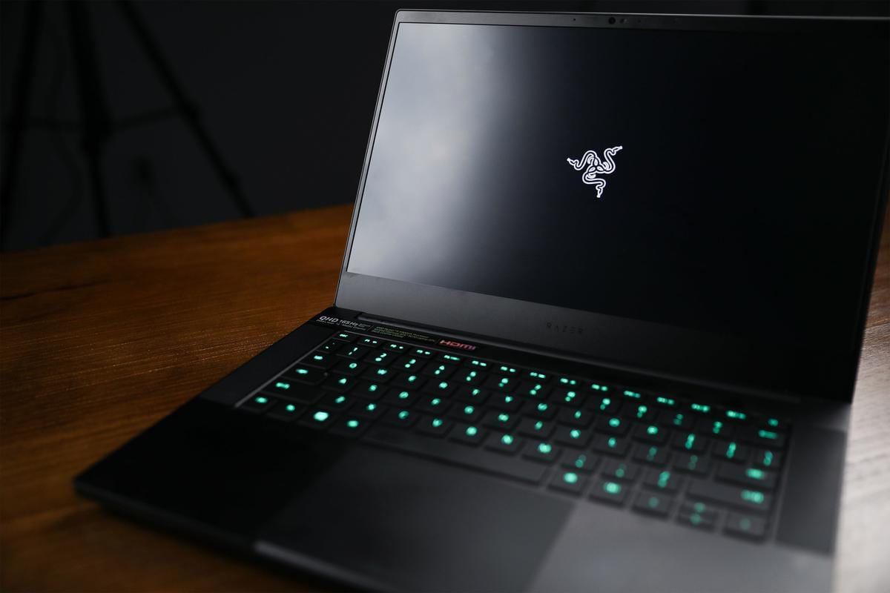

雷蛇灵刃 14（2021）

1.78 公斤塞进 RTX 3070 的轻薄性能猛兽。
客观评测
灵刃 14（2021）采用锐龙 9 5900HX 与 100W 版 RTX 3070，在 14 英寸 1.78kg 机身内实现接近 15 英寸游戏本的性能，实测《赛博朋克 2077》高画质可稳定 60fps 以上。2560×1600 165Hz 屏幕实测覆盖约 100% DCI-P3。61.6Wh 电池办公续航约 5-6 小时。短板是 16GB 板载内存无法升级，高负载时 C 面温度接近 50℃。
主观点评
把 RTX 3070 塞进一台 14 英寸、能装进普通背包的笔记本，本身就是一种偏执的浪漫。黑得发亮的一体成型铝壳、会发绿光的小蛇 Logo，拿在手里像一块精密武器。它的风扇确实吵、键盘确实烫，但当你在高铁桌板上跑起 3A 大作时，那种“随时随地火力全开”的爽快感无与伦比。它证明了轻薄与性能之间并非只能二选一。
优点与不足
- 1.78kg 却搭载满血 RTX 3070，性能密度惊人
- 165Hz 高刷屏色域覆盖 100% DCI-P3
- CNC 阳极氧化铝机身做工一流
- 板载内存不可升级，最高只有 16GB
- 高负载下键盘面温度偏高
- 风扇满载噪音明显
参数规格
| 处理器 | AMD 锐龙 9 5900HX（8 核 16 线程） |
|---|---|
| 显卡 | NVIDIA GeForce RTX 3070 Laptop（8GB GDDR6，100W） |
| 内存 | 16GB DDR4-3200（板载双通道） |
| 存储 | 1TB NVMe SSD（M.2 插槽可更换） |
| 屏幕 | 14 英寸 IPS，2560×1600，165Hz，100% DCI-P3 |
| 电池 | 61.6Wh，实测约 5-6 小时（办公） |
| 接口 | USB-C×2、USB-A×2、HDMI 2.1、读卡器 |
| 重量 | 约 1.78kg |
| 系统 | Windows 10 Home / Windows 11 |
| 散热 | 真空腔均热板 + 双风扇 |